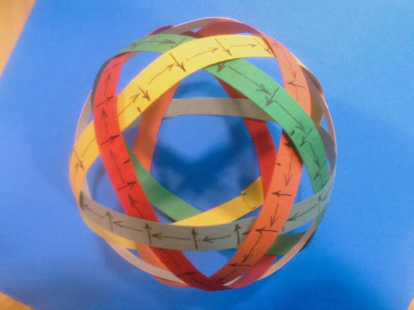

Spherical Electromagnet And Spherical
Electromagnetic Vessel Manipulates Plasma And Magnetic Objects
Inventor: John R
Shearing 732 406 6934 johnshearing@gmail.com
Drawing Sheet # 1 of 18
This Invention Is Freely Given To All People
Click Here To Read The Patent Application And See How It
Was Made
Fig. 1
A question here asks why the torus is used instead of a sphere to contain plasma.
My understanding is that too much heat is lost with a torus to sustain fusion because the plasma is stretched out around the reactor which exposes a lot of surface area.
So if it were possible to make a spherical magnetic container that should help.
The hairy ball theorem states that a sphere will always leak flux somewhere because it is not possible to map a smooth non-zero, and continuous vector field onto its surface.
The device I propose gets around this problem by constantly moving the opening in the magnetic field so that by the time the plasma has reached this opening, the opening has moved to a different location.
The plasma tries to follow the opening which causes it to rotate in pitch, roll, and yaw so that it cuts across the magnetic field lines of the coil which induces current and a secondary magnetic field in the plasma itself.
And since the plasma is rotating in three different axes, it also cuts across its own magnetic field which should cause compression.
I made the two paper models below to show that no matter what polarity is chosen for each of the six coils, the result must be expulsion of the plasma through one of the 12 pentagonal openings of the device.
Which one of the 12 openings that the plasma departs will depend on which way the current is flowing in each of the six coils.
Now imagine that before the plasma can be expelled from the device, the direction of current flow in the coils are changed so that the plasma starts moving to another one of the 12 exits.
And again, before the exit is reached, the current direction in the coils is changed again.
To accomplish this, each of the six coils is powered individually.
Six separate signals from a computer are fed to six channels of amplification which are then fed to the coils.
The interplay of the magnetic fields induced by the six coils is what makes the field rotate in pitch, roll, and yaw at the same time.
Or if current is maintained as shown by the paper models below then the plasma would be expelled.
This scenario is only covering the case where all the coils are energized at the same to produce one of 12 possible directions that the plasma can move.
If we imagine that direction, frequency, wave form, and amplitude of the current in each coil can be managed individually at anytime then the possible motions which can be imparted to the plasma is truly infinite.

These devices could be clustered as shown below.
The model below is not my work but rather was found on the Internet.
Or perhaps a track could be made as shown below which might be another way to impart spin to the plasma.
The model below is not my work but rather was found on the Internet.
In the video seen by clicking here or by clicking on the image below, the copper coil is referred to as the primary winding and the plasma toroid is referred to as the secondary winding.
The patent application is suggesting that by adding 5 more primary windings around the globe as seen in the very first photo at the top of this webpage, you will get much more control of the secondary winding (the plasma toroid).
And with six primary coils acting upon the plasma toroid secondary, it should be possible to bend the toroid such that it cuts across its own lines of flux which will have the effect of causing it to become attracted to itself.
The result should be compression into a ball where the heat and pressure can be concentrated.
The video found above helps to illustrate how a coil of wire can be used to create a plasma toroid.
But this is a low power device operating in near vacuum conditions.
The next question is how can we make a more powerful device that works in the open atmosphere?
As seen in the very first photo at the top of this webpage, there are 12 pentagonal openings where it is possible to insert 12 tungsten or carbon electrodes toward the center to create arcs of plasma between the electrodes.
There are 20 more triangular openings for 20 more electrodes for a total of 32 electrodes defining a spherical volume near the center of the plasma bottle.
By switching on and off various electrodes that create the arc in time with various coils which push or pull the arc it should be possible to get the plasma to rotate and cut across its own field lines which will attract the plasma to the center of the magnetic bottle.
It may even be possible to put the electrodes in parallel with the coils so that as magnetic fields collapse in the coils, the voltage spike will arc across the electrodes to excite the plasma more and more as the coils are turned on and off.
I will make a CAD drawing of the idea described above and post that here soon.